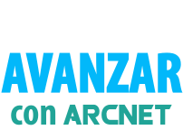
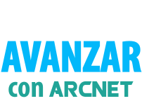

Ecosistema tecnológico de crowdfunding digital para inversores, proyectos innovadores y startups. Criptomoneda construida sobre su propia cadena de bloques y el principio de mezclar transacciones por Masternodes.


ARCNet es un espacio digital donde proyectos innovadores, startups, inversores y personas interesadas en incrementar su capital y generar ingresos encuentran el negocio y su desarrollo.
ARCNet es un modelo económico eficaz para construir un negocio a mediante monetización y tokenización, transferencia de negocios a tecnologías de criptografía y cadena de bloques, creación y transferencia de activos seguros para inversores y comerciantes.
ARCNet ofrece nuevas oportunidades de promoción local e internacional, apoyo y crecimiento de capital.
Desarrollar y mejorar el crowdfunding digital para acelerar la difusión de la innovación positiva en todo el mundo.
Ayudar a las startups a crear un modelo económico efectivo para el financiamiento de acuerdo con los requisitos económicos y legales locales.
Ser un motor innovador de crowdfunding digital, convertirse en líder en este campo y globalizar la demanda de criptomonedas ARC. Convertirla en la base de todos los proyectos del ecosistema.


Usa su propia cadena de bloques y activos digitales. La plataforma es un portal de información global para el crowdfunding digital, que trabaja en conjunto con el intercambio de criptomonedas ARC Exchange.

Brinda soporte informativo, técnico, legal y contable para proyectos innovadores y startups en todas las etapas de preparación e implementación.

De activos virtuales garantizados y no garantizados, formalizados de acuerdo con las leyes locales. Los activos de nuevas empresas y proyectos se enumeran y se negocian en Exchange en pares de token/ARC y ARC/top.
ARC es una criptomoneda tecnológica moderna con la mayor velocidad de transacción y tarifas de transferencia insignificantes. La criptomoneda ARC se basa en el principio de mezclar transacciones utilizando los llamados masternodes. Los masternodes le permiten realizar pagos de verdad anónimos y seguros.

Fue creado en 2016 y basado en la cadena de bloques con el Algoritmo X11. Es una criptomoneda progresiva que tiene una serie de ventajas significativas sobre sus análogos.
El ecosistema ARC es un nuevo formato de desarrollo para startups y proyectos innovadores, cuyo modelo económico se basa en tecnologías de criptografía y cadena de bloques, monetización y tokenización. Y también, para una empresa que busca oportunidades de promoción y apoyo internacional.
Advanced Technology Coin is a modern high-tech cryptocurrency with own blockchain built on the X11 algorithm. ARC cryptocurrency has the highest transaction speed and minimal transfer fees!
ARC - Advanced Technology Coin [RUS]
ARC - Advanced Technology Coin [POR]
ARC - Advanced Technology Coin [ESP]
ARC - Advanced Technology Coin [ENG]
Hoy en día, para las startups y los proyectos innovadores, la forma más eficaz de desarrollo, recaudación de fondos e implementación es crowdfunding digital (una simbiosis de tokenización de startups y financiación colectiva a través de la propiedad garantizada de los activos digitales de los proyectos). ARC Creative Hub es una plataforma de crowdfunding digital.
Nos esforzamos por hacer más fácil y eficiente el camino de las startups y los proyectos innovadores. Gracias a nuestras innovaciones, podrán atraer los fondos necesarios para implementar sus ideas, alcanzar el punto de equilibrio en poco tiempo y tener una alta rentabilidad planificada. ¡Por lo tanto, se puede obtener ganancias para usted y los titulares de sus activos digitales!
ARC Creative Hub tiene la intención de ampliar la infraestructura de las oficinas de redes para popularizar su misión y objetivos. Involucrar masivamente a los usuarios interesados para la facturación (compra, venta, almacenamiento) de ARC y activos digitales de startups y proyectos. Involucrar a una empresa que necesita su propia tokenización en cooperación y también usar un sistema de franquicia. assets of startups and projects. Engage businesses that need their own tokenization. Also use the franchise system.
El ecosistema ARC es un nuevo formato de desarrollo para startups y proyectos innovadores, cuyo modelo económico se basa en tecnologías de criptografía y cadena de bloques, monetización y tokenización. Y también, para una empresa que busca oportunidades de promoción y apoyo internacional.
¿Quiere incrementar su capital con ARC y formar parte del ecosistema moderno?
¡Instale su propio ARC Masternode!
¡Masternode es un activo de ingresos pasivos en constante crecimiento!
¡Únase a una comunidad de personas creativas y exitosas y desarrolle su independencia financiera con nosotros!


Los masternodes son los nodos clave en la red de criptomonedas responsables de su descentralización, alta velocidad de operación, verificación y confirmación de transacciones. Además, una de sus principales funciones es garantizar la seguridad y el anonimato de las transacciones. Por su trabajo, los masternodes reciben la moneda de la red en la que operan.
Los masternodes pueden ser billeteras instaladas en un servidor o computadora con una dirección IP estática. Además, los requisitos básicos para su trabajo incluyen:
– Actividad en la red de 24 horas al día.
– Una transacción colateral por una cierta cantidad de monedas, que están bloqueadas durante la duración del trabajo de Masternode. Estas monedas no se pueden gastar.
Masternode es recompensado por su trabajo en la red. ¡Cualquiera puede instalar ARC Masternode y convertirse en parte de nuestro ecosistema! Los poseedores de Masternode, como los mineros, reciben recompensas por mantener la red. La recompensa en bloque se divide a la mitad entre los poseedores de Masternode y los mineros, lo que le permite tener dos fuentes de ingresos pasivos.
Cualquiera puede conseguir ARC. Para hacer esto, necesita tener un equipo que le permita extraer criptomonedas basadas en el algoritmo PoW X11. Por ejemplo, ASIC D3, u otro similar. La configuración de los equipos de minería generalmente se enumera en el sitio web de la piscina.


ARC X1 - tiene facturación de 50 a 9,999 USDT (depósito personal + facturación de Primera línea). Hold durante 10 meses sin retiro anticipado. Rendimiento del 10% por mes sobre un depósito en USDT pagado en criptomoneda ARC.
ARC X2 se activará automáticamente cuando la facturación supera los 10,000 USDT.
Risk hedging - your deposit during Hold always corresponds to the amount of USDT deposited on the balance.
ARC X1 - tiene facturación de 50 a 9,999 USDT (depósito personal + facturación de Primera línea). Hold durante 10 meses sin retiro anticipado. Rendimiento del 10% por mes sobre un depósito en USDT pagado en criptomoneda ARC.
ARC X2 se activará automáticamente cuando la facturación supera los 10,000 USDT.
Risk hedging - your deposit during Hold always corresponds to the amount of USDT deposited on the balance.

La criptomoneda Advanced Technology Coin tiene una posición sólida en los mercados CoinMarketCap y CoinGecko. A fines de octubre de 2021, el intercambio más popular donde se negocia la criptomoneda ARC (bajo el indicador ARCx) es YoBit.net.

El intercambio Yobit se puso en marcha en 2014 y es una de las plataformas más viejas en el mercado de las criptomonedas.

CoinGecko es un sitio web de clasificación de criptomonedas que proporciona una descripción general completa de la situación de las monedas digitales.

CoinMarketCap es una fuente confiable y precisa de precios e información sobre el mercado de las criptomonedas.

¡Únase a una comunidad de personas creativas y exitosas y desarrolle su independencia financiera con nosotros!


 explorer
explorer Yobit
Yobit